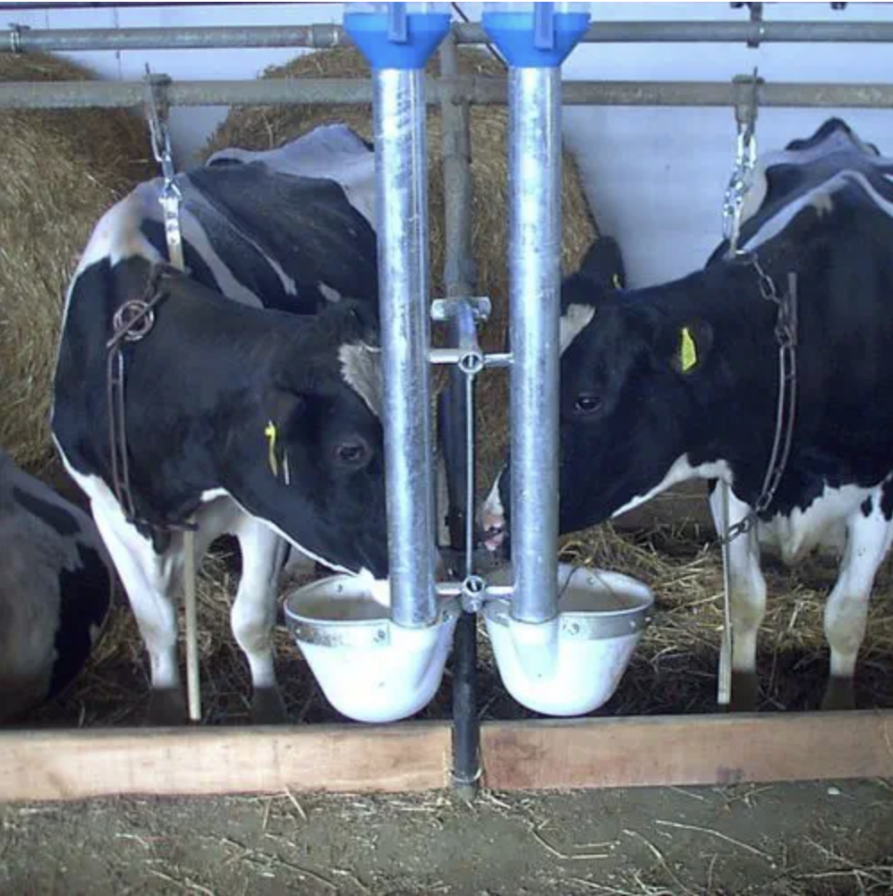
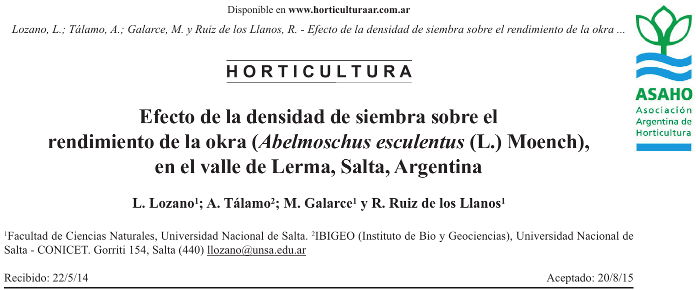
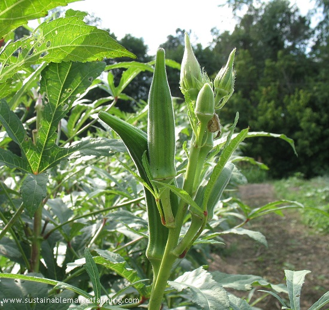
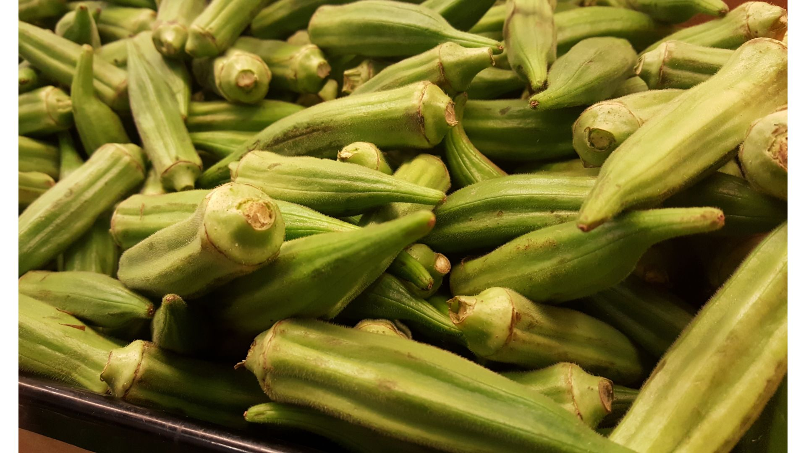
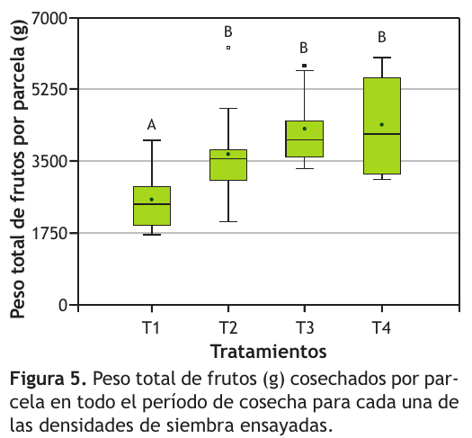
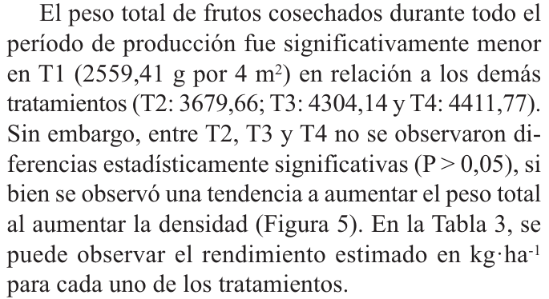
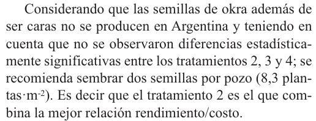

Comparaciones múltiples de medias
¿Dónde están localizadas las diferencias?
Andrés Tálamo
16 de octubre de 2026
Partamos de una pregunta agronómica
¿El tipo de dieta afecta la ganancia diaria de peso de novillitos Brangus?
FACTOR: tipo de dieta
NIVELES DEL FACTOR: 5 formulaciones
- Heno + soja
- Heno + maíz
- Heno + sorgo
- Silaje + soja
- Mixta
VARIABLE RESPUESTA
Ganancia diaria de peso (kg/día).
Datos simulados con fines didácticos.
Diseño del experimento
DISEÑO COMPLETAMENTE ALEATORIZADO (DCA)
Novillitos de características iniciales relativamente homogéneas.

Ejemplo de sistema de alimentación individual
Alimentación individual controlada.
Cada animal recibe individualmente la dieta que le fue asignada.
ANIMAL = UNIDAD EXPERIMENTAL
De la hipótesis agronómica a las estadísticas
HIPÓTESIS AGRONÓMICA
El tipo de dieta afecta la ganancia diaria de peso de los novillitos.
HIPÓTESIS ESTADÍSTICAS
\[H_0:\ \mu_1=\mu_2=\mu_3=\mu_4=\mu_5\]
Cada \(\mu_i\) representa la media poblacional de ganancia diaria para la dieta \(i\).
\[H_1:\ \text{no todas las medias poblacionales son iguales.}\]
El modelo ANOVA de un factor
\[Y_{ij}=\mu+\tau_i+\varepsilon_{ij}\]
- \(Y_{ij}\): ganancia diaria del animal \(j\) que recibe la dieta \(i\).
- \(\mu\): media general.
- \(\tau_i\): efecto de la dieta \(i\).
- \(\varepsilon_{ij}\): error aleatorio.
El ANOVA no es solamente una tabla: estamos ajustando un modelo.
Datos observados: 35 animales
Ganancia diaria de peso (kg/día) · datos simulados
| Heno + soja | Heno + maíz | Heno + sorgo | Silaje + soja | Mixta |
|---|---|---|---|---|
| 0,616 | 0,657 | 0,782 | 0,779 | 0,616 |
| 0,454 | 0,537 | 0,472 | 0,795 | 0,881 |
| 0,440 | 0,784 | 0,781 | 0,695 | 0,882 |
| 0,490 | 0,603 | 0,621 | 1,098 | 0,906 |
| 0,327 | 0,623 | 0,653 | 0,925 | 0,634 |
| 0,483 | 0,654 | 0,719 | 0,548 | 0,780 |
| 0,692 | 0,702 | 0,775 | 0,689 | 0,805 |
Cada valor corresponde a un animal distinto.
5 dietas × 7 animales
ANOVA del experimento de dietas
| Fuente de variación | gl | SC | CM | F | p |
|---|---|---|---|---|---|
| Dieta | 4 | 0,39534 | 0,09884 | 6,21348 | 0,00091327 |
| Error | 30 | 0,47720 | 0,01590661 | ||
| Total | 34 | 0,87254 |
p < 0,05 → rechazamos \(H_0\), con α = 0,05.
MUESTRA → INFERENCIA → POBLACIÓN
Hay evidencia estadística de que el tipo de dieta afecta la ganancia diaria de peso: no todas las medias poblacionales son iguales.
La conclusión se refiere a las poblaciones representadas por el experimento, no solamente a los 35 animales observados.
El ANOVA todavía no indica entre qué dietas se encuentran las diferencias.
¿Qué necesitamos saber ahora?
ANOVA · p = 0,0009
Hay evidencia de diferencias entre las medias poblacionales.
¿Con qué dieta me conviene alimentar a los novillitos?
El ANOVA no permite responder todavía cuál dieta conviene.
Primero: ¿entre qué dietas hay evidencia de diferencias en la ganancia diaria de peso?
Necesitamos comparar las medias.
Muchas medias, muchas comparaciones
Cinco medias muestrales observadas · datos simulados.
\(m=\frac{t(t-1)}{2}\) · \(t\): número de niveles del factor
Cinco dietas → \(m=\frac{5(5-1)}{2}=10\) comparaciones por pares
¿Por qué no hacer muchas pruebas t?
Recordemos el error de tipo I: rechazar una Ho verdadera.
Cada prueba ofrece una oportunidad de detectar una diferencia por azar cuando Ho es verdadera.
Al realizar muchas pruebas sin ajuste, aumenta el riesgo de alguna conclusión de ese tipo.
Muchas comparaciones → muchas decisiones simultáneas → controlar el error.
Comparaciones múltiples de medias
Analizamos simultáneamente diferencias entre medias, con un control del error que depende del procedimiento utilizado.
No siempre interesa comparar los mismos pares. Por eso existen distintas pruebas.
Que las medias muestrales difieran no alcanza

0,50 ≠ 0,65 kg/día
No necesitamos una prueba para comprobar esa diferencia numérica.
¿Aporta evidencia de una diferencia entre las medias poblacionales?
Seguimos haciendo inferencia
MUESTRA
\[\bar Y_i-\bar Y_j\ne 0\]
Observamos una diferencia entre medias muestrales.
↓ INFERENCIA ↓
POBLACIÓN
¿\(\mu_i-\mu_j=0\)?
Tukey: todas las comparaciones de a pares
Comparamos todos los pares, controlando el error familiar.
Para cada par de niveles del factor:
\[H_0:\ \mu_i=\mu_j\qquad H_1:\ \mu_i\ne\mu_j\]
\(\mu_i\) y \(\mu_j\) son medias poblacionales.
La prueba usa diferencias entre medias muestrales para poner a prueba esas hipótesis.
DMS: diferencia mínima significativa
Diferencia observada entre medias muestrales
↓ Consideramos la variabilidad
DMS: umbral para detectar una diferencia
DMS: umbral para detectar una diferencia
\[d_i=|\bar Y_i-\bar Y_j|>\mathrm{DMS}\ \Rightarrow\ \text{rechazo }H_0\]
↓
Inferencia sobre las medias poblacionales
Inferencia sobre las medias poblacionales
En nuestros ejemplos, con igual número de réplicas, usamos una DMS común.
La DMS tiene las mismas unidades que la variable respuesta.
En novillitos, DMS ≈ 0,196 kg/día: las medias muestrales deben superar esa diferencia para aportar evidencia sobre las medias poblacionales.
No alcanza con observar la separación
\[\mathrm{DMS}=q_{\alpha;\,t;\,gl_E}\sqrt{\frac{\color{#8a5a3b}{CMEE}}{\color{#2d6a4f}{n}}}\]
CMEE: numerador · n: réplicas independientes, denominador.
Mayor variabilidad residual (CMEE) → DMS mayor → más difícil detectar diferencias.
Mayor n de réplicas independientes → DMS menor → mayor capacidad para detectar diferencias.
Más mediciones de una misma unidad experimental no equivalen a más réplicas.
Tukey en novillitos: salida tipo InfoStat
Test:Tukey Alfa=0,05 DMS=0,19554 kg/día Error: 0,01591 gl: 30 TIPO DE DIETA Medias n E.E. Heno + soja 0,50 7 0,05 A Heno + maíz 0,65 7 0,05 AB Heno + sorgo 0,69 7 0,05 AB Silaje + soja 0,79 7 0,05 B Mixta 0,79 7 0,05 B Medias con una letra común no son significativamente diferentes (p > 0,05)
Experimento simulado: 35 novillitos asignados al azar; 7 por dieta.
Animal = UE independiente, con alimentación individual. Ganancia en kg/día.
Error = CMEE · gl del error · n: réplicas · E.E. de la media.
Medias muestrales, inferencia poblacional
Test:Tukey Alfa=0,05 DMS=0,19554 kg/día Error: 0,01591 gl: 30 TIPO DE DIETA Medias n E.E. Heno + soja 0,50 7 0,05 A Heno + maíz 0,65 7 0,05 AB Heno + sorgo 0,69 7 0,05 AB Silaje + soja 0,79 7 0,05 B Mixta 0,79 7 0,05 B Medias con una letra común no son significativamente diferentes (p > 0,05)
MEDIAS → medias muestrales observadas.
LETRAS → pruebas sobre medias poblacionales.
¿Qué significa compartir una letra?
“Medias con una letra común no son significativamente diferentes (p > 0,05)”.
No hay evidencia suficiente para afirmar que las medias poblacionales difieren.
Eso no demuestra igualdad entre las medias poblacionales.
Heno con soja o maíz: ¿diferencia significativa?

\(d_i\): segmento verde · DMS: segmento marrón · misma escala (kg/día), barras desde cero.
No: comparten A. No se detectaron diferencias significativas entre sus medias poblacionales.
\(d_i\) = 0,15114 kg/día < DMS = 0,19554 kg/día.
Heno + soja y Mixta: ¿diferencia significativa?

\(d_i\): segmento verde · DMS: segmento marrón · misma escala (kg/día), barras desde cero.
Sí: no comparten letras. Hay evidencia de que sus medias poblacionales difieren.
\(d_i\) = 0,28600 kg/día > DMS = 0,19554 kg/día.
Compartir letras no genera grupos separados

Heno + maíz comparte A con Heno + soja y B con Mixta. Heno + soja y Mixta no comparten letras.
AB no constituye un tercer grupo. Las letras no son un ranking.
¿Cómo lo escribiríamos?
Heno + soja y Heno + maíz comparten la letra A.
INCORRECTO: “Las medias son iguales”.
CORRECTO:
“No se detectaron diferencias significativas entre las medias poblacionales de Heno + soja y Heno + maíz (Tukey, α = 0,05)”.
“No se detectaron diferencias significativas entre las medias poblacionales de Heno + soja y Heno + maíz (Tukey, α = 0,05)”.
Tabla y gráfico comunican el mismo resultado

Puntos: medias muestrales. Barras: ± 1 E.E. Letras: Tukey, α = 0,05.
Posición del punto → media muestral observada.
Letras → inferencia sobre medias poblacionales.
La superposición de barras no determina la significación.
Ahora, un experimento real
Hasta aquí construimos e interpretamos las comparaciones múltiples con un ejemplo didáctico.

Lozano et al. (2015). Horticultura Argentina 34(84): 18–24.
Ahora vamos a interpretar resultados de un experimento realizado en nuestra Facultad.
¿Podemos transferir lo aprendido a un problema agronómico real?
¿Cuántas plantas de okra conviene sembrar?
Okra · Abelmoschus esculentus · variedad Blue Sky


Imágenes ilustrativas: no corresponden al ensayo.
¿Cómo afectan cuatro densidades de siembra a los componentes del rendimiento en el valle de Lerma?
Campo experimental de la FCN–UNSa, Salta · Lozano et al. (2015).
Diseño del experimento
DBCA · 12 bloques · 4 tratamientos · 12 réplicas por tratamiento
T1: 1 planta por pozo
T2: 2 plantas por pozo
T3: 3 plantas por pozo
T4: 4 plantas por pozo
Parcela = UE
4,2 m² (6 m × 0,7 m)
48 parcelas en total.
Una parcela de cada tratamiento en cada bloque.
Orden esquemático; los tratamientos se aleatorizan dentro de cada bloque.
Dietas → DCA · Okra → DBCA. Fuente: Lozano et al. (2015), métodos.
Interpretemos el resultado

¿Qué nos dicen las letras?
¿Qué tratamientos difieren?
T1 vs. T2, T3 y T4:
se detectaron diferencias significativas.
Entre T2, T3 y T4:
no se detectaron diferencias significativas. Esto no demuestra igualdad.
Lozano et al. (2015), fig. 5, p. 22. Diagrama de cajas: la línea interior indica la mediana.
ANOVA a dos criterios (α = 0,05). El artículo no especifica la prueba de comparación múltiple.
Entonces… ¿conviene sembrar cuatro plantas por pozo?
Si un tratamiento tiene el mayor valor observado…
¿Significa que necesariamente es la mejor recomendación?
T2, T3 y T4 comparten letra.
Si no detectamos diferencias entre T2, T3 y T4,
¿qué otra información necesitamos para decidir?
Lozano et al. (2015), figura 5. Discutamos antes de conocer la recomendación.
De la comparación estadística a la decisión agronómica
RESULTADO PUBLICADO · p. 21, § 3.3

RECOMENDACIÓN PUBLICADA · p. 22, § 5

↓ INTERPRETACIÓN / DECISIÓN →
Evidencia estadística + costo y disponibilidad de semillas
Evidencia estadística + costo y disponibilidad de semillas
La estadística aporta evidencia para decidir;
no toma la decisión por nosotros.
no toma la decisión por nosotros.
Lozano et al. (2015). Recortes originales de Resultados y Conclusiones.
¿Siempre Tukey?
| Prueba | ¿Qué comparaciones? |
|---|---|
| Tukey | Todos los pares de medias. |
| Dunnett | Cada tratamiento contra un testigo/control. |
| Duncan | De a pares; suele detectar más diferencias que Tukey. |
Elegimos según qué queremos comparar y cómo deseamos controlar el error.
La mayor sensibilidad de Duncan implica menor protección frente al error de tipo I.
Localizar diferencias, sin perder la inferencia
ANOVA significativo
Por lo menos una media poblacional difiere.
Por lo menos una media poblacional difiere.
↓ ¿Dónde?
Tukey
Diferencias muestrales + variabilidad
Tukey
Diferencias muestrales + variabilidad
↓
Inferencia sobre medias poblacionales
↓ Tabla / letras / gráfico
Inferencia sobre medias poblacionales
↓ Tabla / letras / gráfico
Las medias que observamos son muestrales.
Las hipótesis que ponemos a prueba se refieren a las medias poblacionales.

Andrés Tálamo - Estadística y Diseño Experimental - UNSa